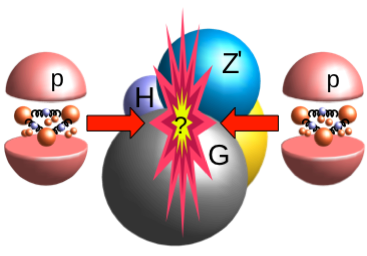

|  |
MC Generator based on the papers:
"Spin Determination of Single-Produced Resonances at Hadron Colliders" Yanyan Gao, Andrei V. Gritsan, Zijin Guo, Kirill Melnikov, Markus Schulze, and Nhan V. Tran http://arxiv.org/abs/1001.3396 "On the Spin and Parity of a Single-Produced Resonance at the LHC" Sara Bolognesi, Yanyan Gao, Andrei V. Gritsan, Kirill Melnikov, Markus Schulze, Nhan V. Tran, and Andrew Whitbeck http://arxiv.org/abs/1208.4018 "Constraining anomalous HVV interactions at proton and lepton colliders" Ian Anderson, Sara Bolognesi, Fabrizio Caola, Yanyan Gao, Andrei V. Gritsan, Christopher B. Martin, Kirill Melnikov, Markus Schulze, Nhan V. Tran, Andrew Whitbeck, and Yaofu Zhou http://arxiv.org/abs/1309.4819 "Constraining anomalous Higgs boson couplings to the heavy flavor fermions using matrix element techniques" Andrei V. Gritsan, Raoul Rontsch, Markus Schulze, and Meng Xiao http://arxiv.org/abs/1606.03107 contacts: Heshy Roskes, Ulascan Sarica, Markus Schulze (Email Us) |